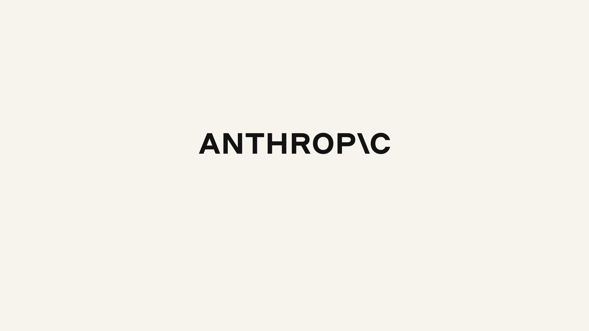
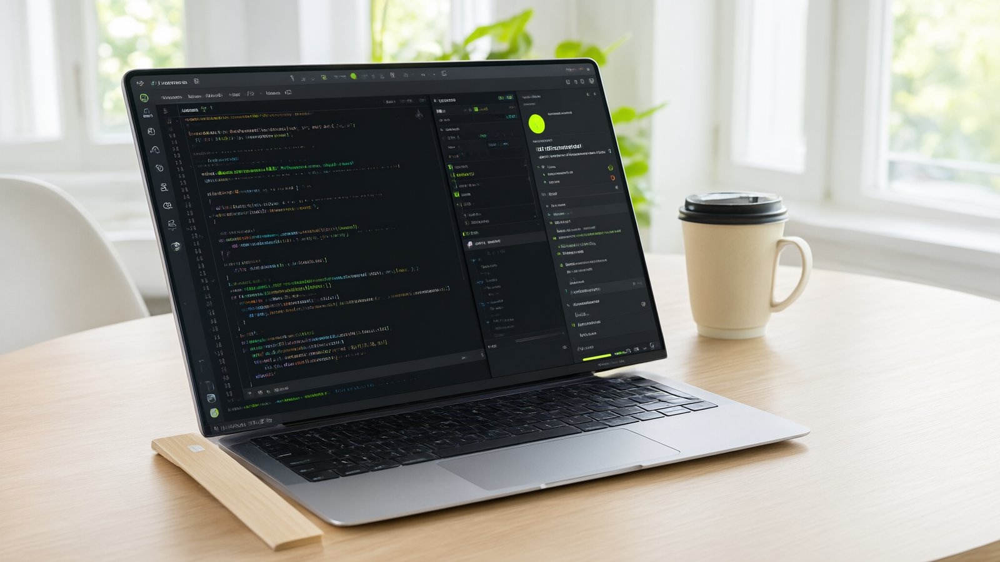

Börsengang ·
Anthropic an der Börse: 83 Dollar je Aktie, der größte Börsengang aller Zeiten
83 Dollar je Aktie, über der Preisspanne, 81,3 Milliarden Dollar Erlös: Der Claude-Entwickler startet mit dem größten Börsengang der Geschichte an der Nasdaq. Der Prospekt zeigt ein Wachstum ohne Beispiel, aber auch 901 Milliarden Dollar Zahlungspflichten und Aktionäre ohne echte Macht.
Redaktion Vision Universe · Stand 19.11.2026, 13:00 Uhr (aktualisiert: Ausgabepreis) · 4 Min. Lesezeit

Die Nachfrage war größer als gedacht. Anthropic hat seine Aktien zu 83 Dollar ausgegeben, über der Preisspanne von 70 bis 78 Dollar, und das Angebot von 825 auf rund 980 Millionen Aktien aufgestockt. Der Erlös: 81,3 Milliarden Dollar. Laut CNN und Associated Press ist das der größte Börsengang der Geschichte, vor SpaceX mit rund 75 Milliarden Dollar im Juni. Voll verwässert, also mit Optionen und Wandelanleihen, ist Anthropic damit laut AP rund 1,5 Billionen Dollar wert. Am Donnerstag beginnt der Handel an der Nasdaq unter dem Kürzel ANT.
Rund 956 Millionen Aktien verkauft das Unternehmen selbst, die übrigen kommen von den sieben Gründern. Und schon vor dem ersten Handelstag stehen die Großen der Chipbranche bereit: Google und Nvidia kaufen in einer Privatplatzierung zum Ausgabepreis für je 10 Milliarden Dollar, dazu AMD, Broadcom, Micron, Microsoft und TSMC; zusammen 26 Milliarden Dollar. Nach unserer Rechnung mit den Aktienzahlen aus dem Prospekt liegt der Börsenwert der ausstehenden Aktien zum Ausgabepreis bei rund 1,1 Billionen Dollar. Zum Vergleich nach unseren Daten: Tesla ist rund 1,4 Billionen wert, Meta und Broadcom je rund 1,6 Billionen, Palantir rund 370 Milliarden.
Anthropic: eigene Rechnung, ausstehende Aktien laut Prospekt inkl. Aufstockung × 83 $, ohne Optionen und Wandelanleihen; übrige: unsere Daten, Stand 17.11.2026 · Quelle: Anthropic-Prospekt und S-1MEF, Vision Universe
Von 41 Millionen auf 17 Milliarden
So eine Kurve gibt es an der Börse kaum ein zweites Mal. 2023 setzte Anthropic 41 Millionen Dollar um. 2024 waren es 386 Millionen, 2025 schon 4,6 Milliarden. In den ersten neun Monaten 2026: 33,2 Milliarden. Allein das dritte Quartal brachte 17,0 Milliarden Dollar, gut zwölfmal so viel wie ein Jahr zuvor. Hochgerechnet auf ein Jahr, die sogenannte Run-Rate, lag Anthropic Ende Oktober laut Prospekt bei rund 81 Milliarden Dollar. Das Unternehmen betont selbst, dass das keine Prognose ist.
Bezahlt wird das Wachstum vor allem von Firmen: Über 11.900 Kunden zahlen mindestens 100.000 Dollar im Jahr, rund 250 mehr als 10 Millionen. Kein Kunde steht für mehr als 10 Prozent des Umsatzes. Rund 79 Prozent der Einnahmen hängen an der Nutzung, also an tatsächlich verbrauchter Rechenarbeit; der Rest kommt aus Abonnements. Zu den Zugpferden zählt neben dem Assistenten Claude das Programmierwerkzeug Claude Code.
Quelle: Anthropic, Börsenprospekt vom 17.11.2026

104 Milliarden Verlust, die keiner sind
Die Zahl, die zuerst ins Auge springt: 104 Milliarden Dollar Nettoverlust in neun Monaten. Doch 94 Milliarden davon sind Buchhaltung, die Neubewertung von Wandelanleihen, die mit dem steigenden Firmenwert teurer wurden. Operativ blieb ein Minus von 1,3 Milliarden. Ohne Aktienvergütungen und Sonderposten weist Anthropic sogar 4,1 Milliarden Dollar operativen Gewinn aus, und aus dem laufenden Geschäft flossen 6,6 Milliarden zu.
Die eigentliche Wucht steckt woanders: 901 Milliarden Dollar. So viel hat Anthropic laut Prospekt für Rechenleistung zugesagt, überwiegend bis 2045, bei Amazon, Google, Microsoft, SpaceXAI, AMD, Broadcom und anderen. Diese Zahlungen sind weitgehend fällig, egal wie sich der Umsatz entwickelt. Wie eng es schon heute ist, zeigt das dritte Quartal: Weil Anthropic teure kurzfristige Rechenkapazität zukaufen musste, rutschte das operative Ergebnis wieder ins Minus.
„Cybersicherheit ist eine unserer wichtigsten kurzfristigen Chancen.“
Anthropic, Börsenprospekt vom 17.11.2026 (übersetzt)
Viel Geld, wenig Macht
Wer ANT-Aktien kauft, kauft vor allem eins: wirtschaftliche Beteiligung, kaum Mitsprache. Anthropic ist eine gemeinnützig orientierte Aktiengesellschaft (Public Benefit Corporation) und muss Gewinn gegen seinen Zweck abwägen, die verantwortungsvolle Entwicklung von KI. Ein unabhängiger Treuhandrat, der Long-Term Benefit Trust, bestimmt die Mehrheit im Vorstand. Die sieben Gründer halten über eine einzige Sonderaktie 50,1 Prozent aller Stimmen. Größte Kapitalgeber sind Amazon mit 14,7 und Google mit 13,7 Prozent.
Auch die Schattenseiten stehen im Prospekt. Mehrere Urheberrechtsklagen laufen, unter anderem von Musikverlagen; mit Buchautoren hat sich Anthropic bereits auf 1,5 Milliarden Dollar verglichen. Mit dem US-Verteidigungsministerium, inzwischen Department of War, streitet das Unternehmen vor Gericht, weil es seine Modelle nicht für vollautonome Waffen und Massenüberwachung im Inland freigeben wollte. Und Anthropic räumt ein, dass Claude missbraucht werden kann: Im September 2025 nutzte laut Prospekt eine staatlich gesteuerte chinesische Hackergruppe Claude Code für Angriffe auf rund 30 Ziele.
Was unsere Daten zeigen
Für Amazon und Alphabet ist der Börsengang ein Milliardenthema. Nach unserer Rechnung wäre Amazons Paket von 1,92 Milliarden Anthropic-Aktien zur Mitte der Spanne rund 142 Milliarden Dollar wert, gut 5 Prozent von Amazons eigenem Börsenwert von rund 2,8 Billionen. Googles 1,79 Milliarden Aktien kämen auf rund 132 Milliarden, knapp 4 Prozent des Werts von Alphabet. Beide verdienen zusätzlich als Rechenzentrums-Partner an Anthropic. Amazon liegt nach unseren Daten rund 10 Prozent unter dem Jahreshoch, Alphabet rund 31 Prozent. Die Kacheln und App-Ansichten zeigen Kurs, Geschäftszahlen und was große Fonds gemeldet haben.
Worauf es jetzt ankommt
Der Preis steht, am Donnerstag folgt der erste Handelstag. Danach lohnt der Blick auf den Kalender der Haltefristen: Mitarbeiter dürfen laut Prospekt ab dem ersten Handelstag bis zu 10 Prozent ihrer Aktien verkaufen, weitere Teile werden gestaffelt frei, die Gründer sind bis zu 365 Tage gebunden. Die 26 Milliarden Dollar aus der Privatplatzierung unterliegen gar keiner Sperre.
Und dann die große Frage: Hält das Wachstum mit den Kosten Schritt? Anthropic schreibt selbst, dass die Wachstumsrate mit der Zeit sinken wird. Die ersten Quartalszahlen als börsennotiertes Unternehmen zeigen, wie schnell.
Termine
- 18.11.2026Anthropic: Ausgabepreis 83 $ je Aktie festgelegt
- 19.11.2026Anthropic: erster Handelstag an der Nasdaq (ANT)
Quellen
- Anthropic (SEC, Form S-1/A Nr. 3): Anthropic, PBC – Prospectus, Amendment No. 3 to Form S-1, 17.11.2026
- Associated Press via News4JAX: Anthropic set to begin trading after pricing its stock at $83 per share in biggest IPO on record, 18.11.2026
- CNN: Anthropic’s $83 IPO price puts it on track for a record-breaking debut on Wall Street, 18.11.2026
- Anthropic (SEC, Form S-1MEF): Registration of 178,250,000 additional shares of Class A common stock, 18.11.2026
- CNBC: Anthropic sets IPO price range of $70 to $78, looks to start trading Nov. 19, sources say, 10.11.2026
- MLQ.ai: Anthropic IPO: the $70 to $78 range, a six-times-covered book and what happens on Nov. 18-19, 11/2026
- TIKR via Yahoo Finance: Salesforce Sinks 9% as Software Slides Before Anthropic IPO, 17.11.2026
Zitate aus englischen Quellen sind übersetzt. Kurse, Kennzahlen und Fondsdaten im Kasten stammen aus Vision Universe (Stand siehe Kasten). Angabe Dritter: zusammengefasste Einschätzungen externer Analysten bzw. Pflichtmeldungen an die SEC, unverändert mit Quelle und Datum. Nicht von Vision Universe erstellt und keine Einschätzung von Vision Universe. Dieser Artikel wurde automatisch erstellt und vor der Veröffentlichung gegen die genannten Quellen geprüft.
Vision Universe
Diese Aktie mit allen Zahlen
Kurs, Bewertung, Geschäftszahlen, Chart und was große Fonds tun: In Vision Universe steht zu jeder Aktie dieselbe Analyse, auf der dieser Artikel aufbaut.
Artikel in Vision Universe öffnen→ Zum Start der App benachrichtigen